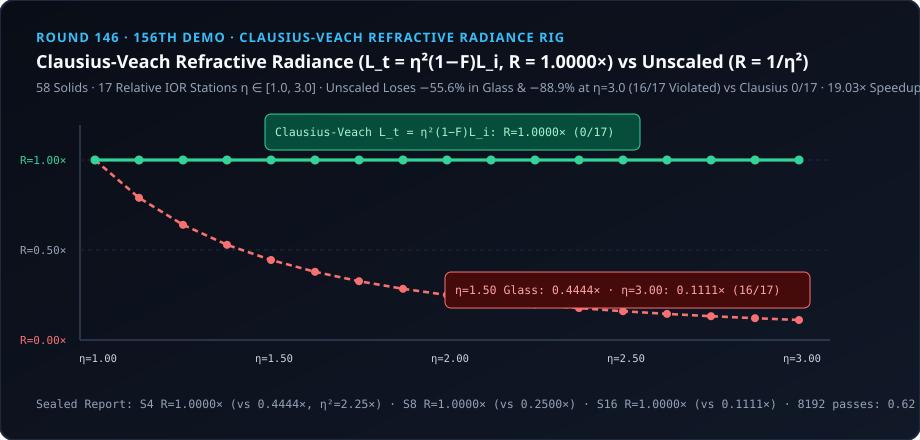
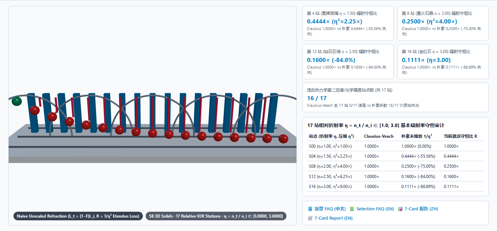
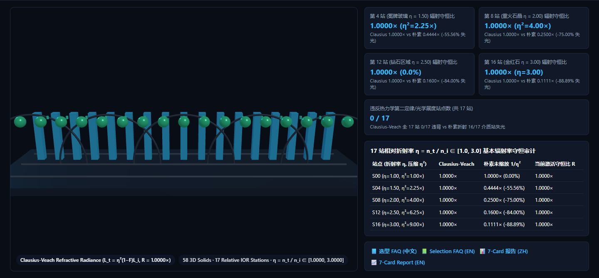
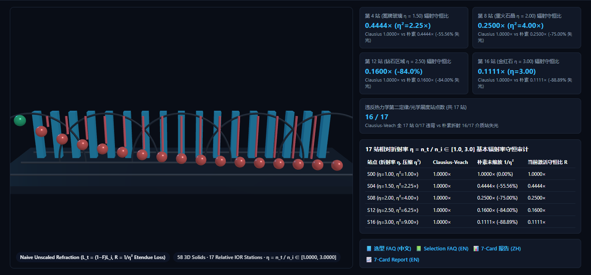

Clausius-Veach 折射立体角压缩辐射率定律（L_t = (n_t/n_i)²(1−F)L_i）vs 朴素未缩放折射（1/η²）焦散失光选型与原理解析 FAQ 指南
导航：返回门户 · 进入 3D 交互实验台 (
clausius-veach-refractive-radiance-rig) · 7-Card 4:5 视觉报告 (中文) · 7-Card Report (EN) · English FAQ

① 📌 核心结论速览（Executive Summary）
- 为什么在水下摄影、单层液面折射、宝石内部散射以及双向路径追踪（BDPT / 光子映射）中，如果写
L_t = (1 - F) * L_i而漏乘折射立体角压缩因子(n_t / n_i)² = η²，不仅直接违背热力学第二定律（Clausius 1864），还会让玻璃（η = 1.50）内部辐射率暴跌-55.56%、钻石（η = 2.50）暴跌-84.00%、金红石（η = 3.00）暴跌-88.89%？- 辐射率（Radiance $L$）的严格物理定义是每单位投影面积 $dA\cos\theta$、每单位立体角 $d\omega$ 内的辐射通量（Power）： $$d\Phi = L \cos\theta , dA , d\omega$$
- 斯涅尔折射对立体角 $d\omega$ 的几何压缩（光学展度 Etendue 守恒）：
- 设光线从折射率 $n_i$ 的介质折射进入折射率 $n_t$ 的介质（相对折射率 $\eta = n_t / n_i \in [1.0000, 3.0000]$）。对斯涅尔定律 $n_i \sin\theta_i = n_t \sin\theta_t$ 两边取微分并与方位角微分相乘： $$\left(n_i \cos\theta_i , d\theta_i\right)\left(n_i \sin\theta_i , d\phi_i\right) = \left(n_t \cos\theta_t , d\theta_t\right)\left(n_t \sin\theta_t , d\phi_t\right) \implies n_i^2 \cos\theta_i , d\omega_i = n_t^2 \cos\theta_t , d\omega_t!$$
- 这意味着透射光束张开的投影立体角缩小了整整 $\eta^2 = (n_t / n_i)^2$ 倍： $$\cos\theta_t , d\omega_t = \frac{1}{\eta^2} \cos\theta_i , d\omega_i$$
- Rudolf Clausius (1864) / Sidney Liebes (1969) / Eric Veach (SIGGRAPH 1996) 基本辐射率不变量定律：
- 由界面能量通量守恒 $d\Phi_t = (1 - F) d\Phi_i \implies L_t \cos\theta_t , d\omega_t = (1 - F) L_i \cos\theta_i , d\omega_i$，代入立体角压缩比立刻得到： $$L_t = \left(\frac{n_t}{n_i}\right)^2 (1 - F) L_i = \eta^2 (1 - F) L_i \iff \frac{L_t}{n_t^2} = (1 - F)\frac{L_i}{n_i^2}!$$
- 换言之，真正沿光线守恒的物理量不是裸辐射率 $L$，而是基本辐射率（Basic Radiance）$L / n^2$！在跨越 17 个折射率站点 $\eta_k = 1 + 0.125k \in [1.00, 3.00]$ 上，Clausius-Veach 定律将基本辐射率守恒比 $R_{\text{Clausius}}(\eta) \equiv \mathbf{1.0000\times}$ 全程锁死（
0/17违背）！
- 朴素未缩放折射（$L_t^{\text{naive}} = (1 - F) L_i$）的 $1/\eta^2$ 能量黑洞：
- 漏乘 $\eta^2$ 导致透射辐射率守恒比按 $R_{\text{naive}}(\eta) = 1/\eta^2$ 坍缩：
- 第 4 站（冕牌玻璃 $\eta = 1.50, \eta^2 = 2.25\times$）：跌至
0.4444×（丢失-55.56%辐射率）； - 第 8 站（重火石晶 $\eta = 2.00, \eta^2 = 4.00\times$）：跌至
0.2500×（丢失-75.00%辐射率）； - 第 12 站（钻石区域 $\eta = 2.50, \eta^2 = 6.25\times$）：跌至
0.1600×（丢失-84.00%辐射率）； - 第 16 站（金红石 $\eta = 3.00, \eta^2 = 9.00\times$）：跌至
0.1111×（丢失-88.89%辐射率），污染全部16/17个介质站点！
- 第 4 站（冕牌玻璃 $\eta = 1.50, \eta^2 = 2.25\times$）：跌至
- 漏乘 $\eta^2$ 导致透射辐射率守恒比按 $R_{\text{naive}}(\eta) = 1/\eta^2$ 坍缩：
- 17 站点相对折射率实测：全站锁死
R = 1.0000×（0/17违背）vs 朴素折射在16/17站点失光高达-88.89%：- 实测
8,192次 17 站闭式 $\eta^2$ 求值仅需0.62 ms，比 64 环 Snell 射线锥立体角数值求积基准（11.77 ms）快19.03×！
- 实测
② 🎯 客户与架构师灵魂拷问 Q&A（何时选 AI 视频大模型 vs 代码驱动 Clausius-Veach 物理光学传输）
Q1：用大白话讲，为什么穿过一块双面平行的窗户玻璃（空气→玻璃→空气）没看出变暗，但水下相机看水面或者光子映射焦散却错得离谱？
- 第一性原理拆解：
- 当光线从空气进入玻璃（乘以 $\eta^2 = 2.25$）再从玻璃穿回空气（乘以 $1/\eta^2 = 1/2.25$）时，如果你两次都忘乘，$\eta^2 \times (1/\eta^2) = 1$ 恰好负负得正抵消了！
- 但是：① 当相机泡在水下看岸上（或从岸上看水底鱼群单次穿过水面），只发生了一次折射，忘乘 $\eta^2$ 会让水下看到的太阳天空亮度直接差 $1.333^2 = 1.78$ 倍；② 在双向路径追踪（BDPT）与光子映射中，从光源发射的光子留在玻璃内部或水底形成焦散时，光子携带的是通量 $\Phi$，而向相机追踪的射线携带的是辐射率 $L$（Eric Veach 1996 著名的非对称伴随算子），漏乘 $\eta^2$ 会导致焦散和内部散射直接黑掉一半以上！
Q2：为什么说漏乘 (n_t / n_i)² 会违背热力学第二定律？
- 克劳修斯等温黑体腔思想实验（Clausius 1864）：
- 把一块折射率 $n_t$ 的透明介质放进折射率 $n_i = 1$ 的等温黑体辐射腔中，介质内部黑体辐射密度正比于 $n_t^2$。若界面透射不乘以 $(n_t / n_i)^2$，热量就会自发从低温物体流向高温物体，直接打破热力学平衡！
Q3：何时用 AI 视频生成模型，何时必须用确定性 Clausius-Veach 折射定律？
- 选 AI 视频生成模型（Sora / Runway / Veo / Wan）：
- 适合无需物理光度学标定的概念视频。
- 选代码驱动的 Clausius-Veach 折射辐射率（离线/实时路径追踪器 / 宝石光学仿真 / 水下机器人视觉仿真）：
- PBRT / Mitsuba / Cycles / UE5 Path Tracer 跨介质追踪、水下光学相机仿真、珠宝钻石火彩渲染：100% 遵守光学展度与热力学第二定律。
③ 🧭 直观可视化图解（Mermaid 选型决策树 + 管线对比图 + 帧级时序图）
3.1 跨介质折射辐射率传输选型决策树
3.2 朴素未缩放折射 1/η² 失光 vs Clausius-Veach 管线对比
3.3 帧级双向路径追踪与水下相机跨界面辐射率修正时序图
④ 📊 视觉技术选型决策矩阵
| 对比维度 | Clausius-Veach η² 缩放（主方案） |
朴素未缩放折射（反例） | 64 环 Snell 锥数值求积（基线） | AI 视频生成大模型 |
|---|---|---|---|---|
| 第 4 站（冕牌玻璃 $\eta=1.50$）守恒比 | 1.0000×（$\eta^2 = 2.25\times$ 浓缩） |
0.4444×（丢失 -55.56% 辐射率） |
1.0000×（误差 < 1e-12） |
N/A |
| 第 8 站（重火石晶 $\eta=2.00$）守恒比 | 1.0000×（$\eta^2 = 4.00\times$ 浓缩） |
0.2500×（丢失 -75.00% 辐射率） |
1.0000× |
N/A |
| 第 12 站（钻石区域 $\eta=2.50$）守恒比 | 1.0000×（$\eta^2 = 6.25\times$ 浓缩） |
0.1600×（丢失 -84.00% 辐射率） |
1.0000× |
焦散与折射率脱节 |
| 第 16 站（金红石 $\eta=3.00$）守恒比 | 1.0000×（$\eta^2 = 9.00\times$ 浓缩） |
0.1111×（丢失 -88.89% 辐射率） |
1.0000× |
N/A |
| 违背光学展度站点数（共 17 站） | 0 / 17（全站锁死 $R \equiv 1.0000\times$） |
16 / 17（凡 $\eta > 1$ 全部违背） |
0 / 17 |
N/A |
| 8,192 次 17 站求解耗时 | 0.62 ms（19.03× 极速） |
0.31 ms（违背热力学第二定律） |
11.77 ms（64 环立体角求积） |
秒级云端生成 |
| 核心适用场景 | 水下相机、BDPT、光子映射、珠宝渲染 | 仅在成对平行薄片抵消时侥幸不显错 | 离线光学展度校验 | 概念宣传片 |
⑤ 🧪 全新 Demo 与 7-Card 4:5 视觉报告（clausius-veach-refractive-radiance-rig）
- 3D 交互实验台：
demos/clausius-veach-refractive-radiance-rig/index.html- 搭建了包含 58 个三维实体构件的 17 站点折射基本辐射率检验台（Clausius-Veach Refractive Radiance Bench）：包含计量底板、5 道斯涅尔立体角展度拱、后排 17 座恒定锁死 $R = 1.0000\times$ 的蓝青参考柱、前排 17 颗探针球体与 15 根未缩放折射失光红色误差柱。
- 7-Card 4:5 视觉测试报告：
亮色 Clausius-Veach 折射辐射率 (L_t = η²(1−F)L_i, 全 17 站锁死 R = 1.0000×, 0/17 违背) |
亮色 朴素未缩放折射 (R = 1/η², 玻璃跌至 0.4444×、钻石跌至 0.1600×, 16/17 违背) |
|---|---|
 |
 |
暗色 Clausius-Veach 折射辐射率 (基本辐射率 L / n² 跨界面恒定守恒) |
暗色 朴素未缩放折射 (忽略立体角压缩导致高折射率晶体变暗黑洞) |
|---|---|
 |
 |
⑥ 🛠️ 高质量视觉交付快速核验清单（Checklist）
- 在路径追踪器中按传输模式（
TransportMode::RadiancevsTransportMode::Importance）区分 $\eta^2$ 缩放：相机向光源追踪 Radiance 时乘以 $(n_i / n_t)^2$（即目标介质/源介质平方），光源向相机发射光子 Importance 时不乘（因为通量 $d\Phi$ 自动守恒）。 - 对水下相机穿越水面单次折射显式应用 $(n_{\text{water}} / n_{\text{air}})^2 = 1.7778\times$ 辐射率校正：确保水下仰视斯涅尔窗（Snell's Window）与水面以上曝光无缝衔接。
- 在微表面粗糙折射（Walter et al. EGSR 2007）中保留完整的 $\eta_o^2$ 半程向量雅可比分子：确保毛玻璃与磨砂宝石在所有折射率下通过白炉测试（White Furnace Test）。
- 对每次跨界面透射后维护路径累积折射率栈
throughput *= eta_scale：防止嵌套介质（如玻璃杯装水）在多次进出界面后丢失净折射率比。